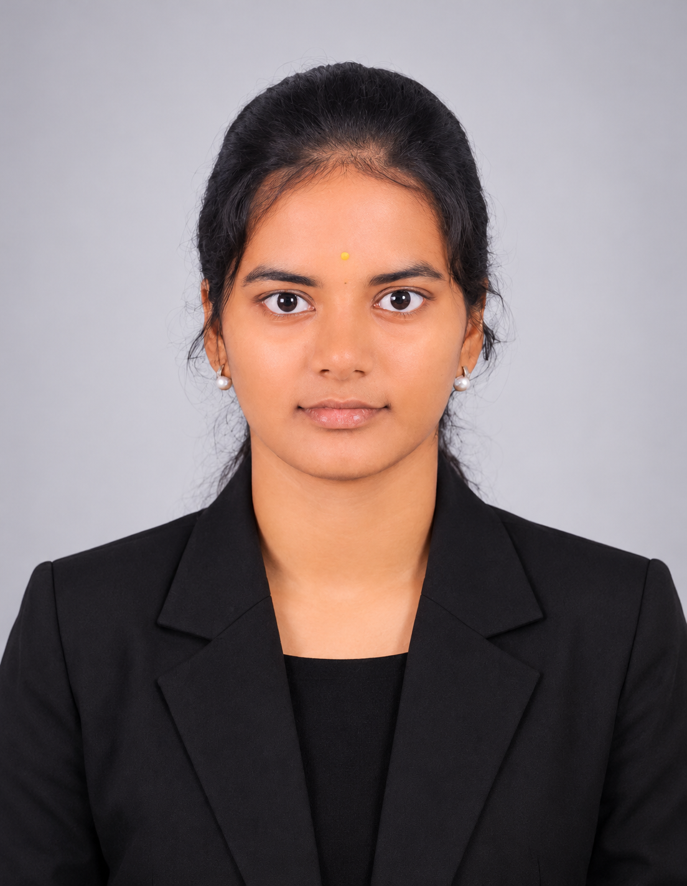

Python
Beginner
HELLO, I'M
An Artificial Intelligence and Data Science student interested in exploring ideas, learning through experiences, and discovering how technology can solve real-world challenges.

A LITTLE ABOUT ME
I'm Yaamini V M, an Artificial Intelligence and Data Science student with a curiosity for technology and its potential to create meaningful change. I enjoy exploring new ideas, learning through experiences, and discovering how technology can solve real-world challenges.
I'm continuously growing, with a passion for innovation and problem-solving.
WHAT I'M LEARNING
A growing foundation, built one step at a time.
Beginner
Beginner
Basic knowledge
Coursework
Coursework
Coursework
SELECTED WORK
Ideas, experiments and solutions shaped through learning.
An IoT-based rider safety system combining accident detection, real-time heart-rate monitoring, GPS tracking and GSM emergency alerts.
The system uses motion sensing to identify accidents, monitors the rider's heart rate, tracks location through GPS and sends emergency alerts through GSM. A buzzer provides a nearby alert.
A smart wearable compression cuff concept designed to monitor joint inflammation indicators and predict potential arthritis flare-ups.
The proposed cuff combines temperature sensing and PPG-based HRV measurement. An Edge AI model analyzes the signals; a mobile alert and vibration or mild-compression response are proposed for high-risk readings.
A proposed web application that analyzes noisy TESS light curves and classifies transit signals using signal processing and machine learning.
The workflow includes preprocessing, Box Least Squares transit detection, feature extraction (period, depth, duration and SNR), classification, confidence scoring, visualization and report generation.
An interactive dashboard exploring accident frequency, causes, severity and regional patterns across Indian states.
Built with R and Shiny using the NCRB ADSI 2023 dataset. Statistical analysis and risk scoring support charts, heatmaps and regional comparisons for road-safety insights.
A software-based acoustic anomaly detection and mapping concept for identifying unusual industrial machine sounds.
The system explores acoustic features such as MFCC, spectral centroid and zero-crossing rate to classify normal and abnormal sound patterns and display findings on an interactive dashboard.
An interactive R Shiny dashboard exploring 55 years of health, wealth and population change across 142 countries.
Country-level summaries, rankings, comparisons, a choropleth map and downloadable generative poster designs turn the Gapminder dataset into an interactive data story.
A Tamil Nadu dashboard comparing government-school infrastructure indicators across districts using UDISE+ data.
The project cleans and aggregates district data, computes a composite infrastructure score from seven facility indicators, and presents maps, rankings, comparisons and a filterable table. The analysis is still being refined.
A web app concept for garment pattern drafting, fabric nesting, cutting-layout generation and material cost estimation.
Uses measurements and fabric details to draft pattern pieces, arrange shapes on fabric while respecting grain and nap, and estimate fabric usage, waste and cost. Optional photo-based style reading is part of the concept.
MY ACADEMIC JOURNEY
Dr. N.G.P. Institute of Technology · Coimbatore, Tamil Nadu
First-year CGPA · 8.5LEARNING & RECOGNITION
A selection of courses, events and experiences.
HAVE AN OPPORTUNITY?
I'm open to learning opportunities, collaborations and internship conversations.